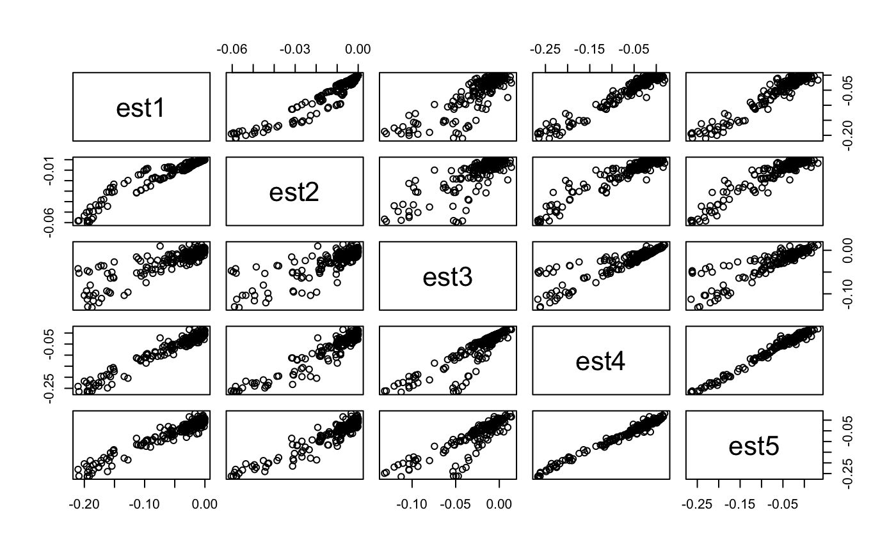
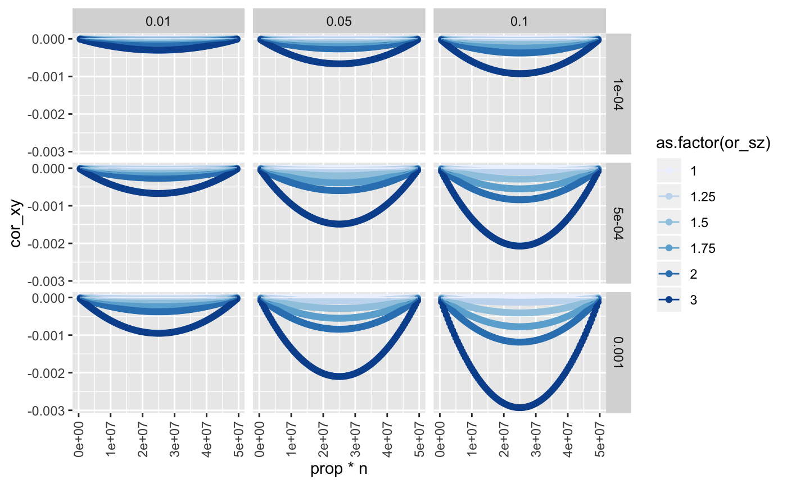
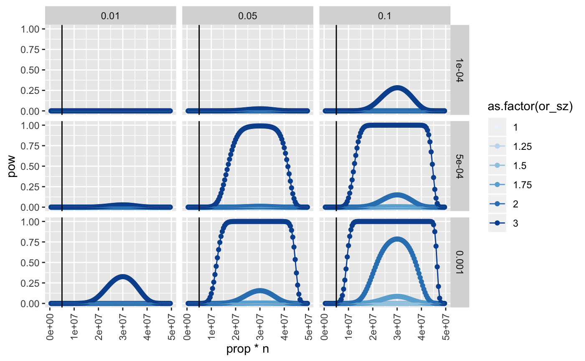

Ascertainment on a collider
Gibran Hemani
Source:vignettes/collider_ascertainment.rmd
collider_ascertainment.rmdsuppressWarnings(suppressPackageStartupMessages({ library(knitr) library(ggplot2) library(dplyr) library(pwr) })) knitr::opts_chunk$set(echo=TRUE, message=FALSE, warning=FALSE, dev="png")
\(\newcommand{\var}[1]{\operatorname{var}\left(#1\right)} \newcommand{\E}[1]{\mathbb{E}\left[#1\right]} \newcommand{\logit}[1]{\operatorname{logit}\left(#1\right)} \DeclareMathOperator{\cov}{cov}\)
The purpose of expanding sample sizes for genome-wide association studies, now happening at a rapid rate with the advent of population scale biobanks, is to detect more and more genetic variants associated with complex traits of interest. With 5 million samples, the effect sizes detectable are extremely small. While this provides exquisite power to detect extremely small effects, it opens up new avenues of subtle bias. One such problem arises because the recruited individuals are not representative of the general population. If they are ascertained, for example for higher education levels, collider bias will induce correlations amongst all the causes of higher education levels within the sample. This problem is typically ignored because the magnitude of the collider bias is relatively small, and unlikely to be detectable at genome-wide significance thresholds. However, with extreme statistical power that safety may disappear.
The UK has a population of 50 million adults. In the next major genotyping effort, 5 million will be sampled and genotyped. In principle this is to improve statistical power for GWAS. In many cases the GWAS signals of interest are only those that are very strongly associated, e.g. with \(p < 5\times10^{-8}\). This likely guards against a lot of the potential problems that can arise due to subtle sampling issues such as collider bias in ascertained samples.
Question: When power to detect very small effects gets large, is the problem of collider bias arising due to ascertainment in GWAS now a realistic problem?
Question: As more of the population is sampled, how does this bias change in power and magnitude?
Use educational attainment (\(S\)) as the variable that influences ascertainment, and ascertainment is a binary variable \(z\) which indicates if the individual is in the sample. Suppose that educational attainment influences the probability of being recruited into the sample, or at least having non-missing data in the sample. The logistic function can be used to model the relationship of influence of educational attainment on being sampled
\[ \logit{\mu_i} = \alpha + \delta S_i \]
where \(\mu_i\) is the probability for the \(i\)th individual being included in the sample based on their value of \(S\), and the intercept \(\alpha\) indicates the proportion of individuals in the population who are sampled, \(p\) by:
\[ p = \frac{1}{1 + \exp{-\alpha}} \]
The (biased) estimate of the effect of a genetic variant (\(G\)) on some predictor of education (\(X\)), when estimated only amongst recruited samples (\(Z = 1\)), is given by
\[ \widehat{\beta}_{GX} = \frac{\sigma_{GX}/\sigma_{G} - \sigma_{GZ}\sigma_{XZ} / \sigma_{Z}^2}{1 - (\sigma_{GZ}/\sigma_{Z})^2} \]
Given the relationship between education and recruitment, we can parameterise the bias in terms of:
- \(p\) - proportion of the sample recruited,
- \(\delta\) - how strongly education influences recruitment,
- \(\beta_{GS}\) - the effect of a genetic variant on education,
- \(\beta_{XS}\) - the effect of a factor for education on education,
- \(m\) - allele frequency of the genetic variant
- \(\sigma^2_{G} = 2m(1-m)\),
- \(\sigma^2_{X}\) - the variance of the factor for education,
- \(\sigma^2_{S}\) - the variance of educational attainment
The value of \(Z\) indicates if an individual is present in the sample, and this is a function of
\[ \sigma_{GZ} = \cov\left(G,\frac{p}{1-p}\delta S\right) \]
\[ \widehat{\beta}_{GX} = \frac{\sigma_{GX}/2m(1-m) - \cov(G, \frac{p}{1-p}\delta S)\cov(X, \frac{p}{1-p}\delta S) / \sigma_{Z}^2}{1 - \left(\cov(G, \frac{p}{1-p}\delta S)/\sigma_{Z}\right)^2} \]
There are two different methods for estimating the collider effect.
Groenwold, Palmer and Tilling (2020, https://osf.io/vrcuf/) gives:
\[ \widehat{\beta}_{xy|s} = \frac{\beta_{xy} \sigma^2_{s} \sigma^2_{x} - \beta_{xs} \beta_{ys} \sigma^2_x \sigma^2_y}{\beta^2_{ys} \sigma^2_x \sigma^2_y + \sigma^2_s \sigma^2_x} \]
Pearl (2013, https://ftp.cs.ucla.edu/pub/stat_ser/r409_submitted_corrected.pdf) gives:
\[ \widehat{\beta}_{xy|s} = \frac{\sigma_{xy} - \sigma_{sy} \sigma_{sx}}{1 - \sigma^2_{sx}} \]
This assumes error terms are equal I think.
I get differing results between these solutions when the variances of \(x\) and \(y\) change. An alternative to the first one is:
\[ \widehat{\beta}_{xy|s} = \frac{\beta_{xy} \sigma^2_{s} \sigma^2_{x} - \beta_{xs} \beta_{ys} \sigma^2_x \sigma^2_y}{\beta^2_{ys} \sigma^2_x \sigma^2_y + \sigma^2_x} \]
Simulate continuous collider that influences a continuous conditioning variable
set.seed(20200420) n <- 100000 x <- rnorm(n) y <- rnorm(n) b_xy <- 0 b_xs <- 6 b_ys <- 8 b_sz <- 5 s <- x * b_xs + y * b_ys + rnorm(n) z <- s * b_sz + rnorm(n)
Bias in x-y assoc when conditioning on s
(b_xy * var(s) * var(x) - b_xs * b_ys * var(x) * var(y)) / (b_ys^2 * var(x) * var(y) + var(x)) #> [1] -0.7384592 lm(y ~ x + s)$coef[2] #> x #> -0.7379023
Bias in x-y assoc when conditioning on z
b_xz <- lm(z ~ x)$coef[2] b_yz <- lm(z ~ y)$coef[2] (b_xy * var(z) * var(x) - b_xz * b_yz * var(x) * var(y)) / (b_yz^2 * var(x) * var(y) + var(x)) #> x #> -0.7497879 lm(y ~ x + z)$coef[2] #> x #> -0.7374491
Is the same.. why?
Now make x binary. This also changes its mean and variance. Change y variance also
set.seed(12345) n <- 100000 maf <- 0.3 x <- rbinom(n, 2, maf) y <- rnorm(n, sd=3) s <- x * 6 + y * 8 + rnorm(n) z <- s * 5 + rnorm(n)
Bias in x-y assoc when conditioning on s
(b_xy * var(s) * var(x) - b_xs * b_ys * var(x) * var(y)) / (b_ys^2 * var(x) * var(y) + var(x)) #> [1] -0.7487032 lm(y ~ x + s)$coef[2] #> x #> -0.7491357
Bias in x-y assoc when conditioning on z
b_xz <- lm(z ~ x)$coef[2] b_yz <- lm(z ~ y)$coef[2] (b_xy * var(z) * var(x) - b_xz * b_yz * var(x) * var(y)) / (b_yz^2 * var(x) * var(y) + var(x)) #> x #> -0.7601216 lm(y ~ x + z)$coef[2] #> x #> -0.7491772
Now make z binary
x <- rbinom(n, 2, maf) y <- rnorm(n) s <- x * b_xs + y * b_ys l <- b_sz*s pr <- 1 / (1 + exp(-l)) z <- rbinom(n, 1, pr) table(z) #> z #> 0 1 #> 34984 65016
Condition on z
b_xz <- lm(z ~ x)$coef[2] b_yz <- lm(z ~ y)$coef[2] (b_xy * var(z) * var(x) - b_xz * b_yz * var(x) * var(y)) / (b_yz^2 * var(x) * var(y) + var(x)*var(z)) #> x #> -0.2399797 (b_xy * var(z) * var(x) - b_xz * b_yz * var(x) * var(y)) / (b_yz^2 * var(x) * var(y) + var(x)) #> x #> -0.07334314 lm(y ~ x + z)$coef[2] #> x #> -0.3886506 lm(y[z==1] ~ x[z==1])$coef[2] #> x[z == 1] #> -0.3450915
Now it’s weird because it seems to need the var(z) term in the denominator.. compare different methods:
library(dplyr) param <- expand.grid( n = 100000, maf = c(0.1, 0.5, 0.7), b_xy = c(0, 0.3), b_xs = c(0.1, 0.6), b_ys = c(0.4, 0.8), b_sz = c(0.4, 0.8), sdy = c(1, 3), alpha = c(0, 1, 2), sim=1 ) out <- list() for(i in 1:nrow(param)) { message(i) pa <- param[i, ] x <- rbinom(pa$n, 2, pa$maf) y <- rnorm(pa$n, sd=pa$sdy) s <- x * pa$b_xs + y * pa$b_ys l <- pa$alpha + pa$b_sz*s pr <- 1 / (1 + exp(-l)) z <- rbinom(pa$n, 1, pr) b_xz <- cov(x,z) / var(x) b_yz <- cov(y,z) / var(y) pa$est1 <- (b_xy * var(z) * var(x) - b_xz * b_yz * var(x) * var(y)) / (b_yz^2 * var(x) * var(y) + var(x)*var(z)) pa$est2 <- (b_xy * var(z) * var(x) - b_xz * b_yz * var(x) * var(y)) / (b_yz^2 * var(x) * var(y) + var(x)) pa$est3 <- (cov(x,y)/sd(x) - cov(x,z) * cov(y, z) / var(z)) / (1 - cov(x,z)^2/var(z)) pa$est4 <- lm(y ~ x + z)$coef[2] pa$est5 <- cov(y[z==1], x[z==1]) / var(x[z==1]) out[[i]] <- pa } out <- bind_rows(out) subset(out, select=c(est1, est2, est3, est4, est5)) %>% pairs

subset(out, select=c(est1, est2, est3, est4, est5)) %>% cor #> est1 est2 est3 est4 est5 #> est1 1.0000000 0.9629110 0.8738554 0.9780196 0.9710900 #> est2 0.9629110 1.0000000 0.8355253 0.9546122 0.9537294 #> est3 0.8738554 0.8355253 1.0000000 0.9066688 0.8934389 #> est4 0.9780196 0.9546122 0.9066688 1.0000000 0.9920717 #> est5 0.9710900 0.9537294 0.8934389 0.9920717 1.0000000
Ok just use the original version in Groenwold 2020, it has the best correlation across parameters with the actual conditioning method.
Substituting in simulation terms
Can we present in terms of \(s\) instead of \(z\)? What is cov(x,z) in terms of cov(x,s)
\[ \cov(X,Z) = \cov(X,\beta S) \]
\[ \beta = \frac{\cov(S,Z)}{\var{S}} \]
x <- rbinom(n, 2, maf) y <- rnorm(n) s <- x * b_xs + y * b_ys l <- b_sz*s pr <- 1 / (1 + exp(-l)) z <- rbinom(n, 1, pr) table(z) #> z #> 0 1 #> 34429 65571 b_xz <- lm(z ~ x)$coef[2] b_yz <- lm(z ~ y)$coef[2] (b_xy * var(z) * var(x) - b_xz * b_yz * var(x) * var(y)) / (b_yz^2 * var(x) * var(y) + var(x)*var(z)) #> x #> -0.2348822 (b_xy * var(z) * var(x) - b_xz * b_yz * var(x) * var(y)) / (b_yz^2 * var(x) * var(y) + var(x)) #> x #> -0.07113873 lm(y ~ x + z)$coef[2] #> x #> -0.3922177 lm(y[z==1] ~ x[z==1])$coef[2] #> x[z == 1] #> -0.3489736
Obtain \(\beta_{yz}\) in terms of \(\beta_{ys}\) and \(\beta_{sz}\)
b_xs = cov(x,s)/var(x) b_ys = cov(y,s)/var(y) b_sz = cov(s,z)/var(s) (b_xy * var(z) * var(x) - b_xz * b_yz * var(x) * var(y)) / (b_yz^2 * var(x) * var(y) + var(x)*var(z)) #> x #> -0.2348822 (b_xy * var(z) * var(x) - b_xs * b_sz * b_ys * b_sz * var(x) * var(y)) / ((b_ys * b_sz)^2 * var(x) * var(y) + var(x)*var(z)) #> [1] -0.2434724
Present b_sz in terms of OR in logistic regression model
x <- rbinom(n, 2, maf) y <- rnorm(n) s <- x * b_xs + y * b_ys l <- b_sz*s pr <- 1 / (1 + exp(-l)) z <- rbinom(n, 1, pr) b_xz <- lm(z ~ x)$coef[2] b_yz <- lm(z ~ y)$coef[2] logor = glm(z ~ s, family="binomial")$coef[2] # estimate lm bhat_sz = lm(z ~ s)$coef[2] # convert beta to logor prop <- sum(z == 1) / length(z) mu <- prop * (1 - prop) # get beta from logOR logor * mu #> s #> 0.01054151 cov(s,z)/var(s) #> [1] 0.01018716 lm(y[z==1] ~ x[z==1])$coef[2] #> x[z == 1] #> -0.02452379 b_xs = cov(x,s)/var(x) b_ys = cov(y,s)/var(y) b_sz = cov(s,z)/var(s) (b_xy * var(z) * var(x) - b_xz * b_yz * var(x) * var(y)) / (b_yz^2 * var(x) * var(y) + var(x)*var(z)) #> x #> -0.01945076 (b_xy * var(z) * var(x) - b_xs * b_sz * b_ys * b_sz * var(x) * var(y)) / ((b_ys * b_sz)^2 * var(x) * var(y) + var(x)*var(z)) #> [1] -0.01963616 (b_xy * var(z) * var(x) - b_xs * logor * mu * b_ys * logor * mu * var(x) * var(y)) / ((b_ys * logor * mu)^2 * var(x) * var(y) + var(x)*var(z)) #> s #> -0.02098708
Quick recap:
\[ \begin{aligned} \widehat{\beta}_{xy|s} &= \frac{\beta_{xy} \sigma^2_{s} \sigma^2_{x} - \beta_{xs} \beta_{ys} \sigma^2_x \sigma^2_y}{\beta^2_{ys} \sigma^2_x \sigma^2_y + \sigma^2_s \sigma^2_x} \\ \widehat{\beta}_{xy|z} &= \frac{\beta_{xy} \sigma^2_{s} 2m(1-m) - \beta_{xs} \beta_{ys} \log{\text{OR}_{sz}}^2 p^2(1-p)^2 2m(1-m) \sigma^2_y}{\beta^2_{ys}\log{\text{OR}_{SZ}} 2m(1-m) \sigma^2_y + \sigma^2_s 2m(1-m)} \\ \end{aligned} \]
So now we need to present betas in terms of variances. What explains \(S\)?
\[ \begin{aligned} S_i &= \beta_{SX} X_i + \beta_{SY} Y_i + e_i \\ R^2_{S} &= \frac{2 \beta^2_{SX} m(1-m) + \beta^2_{SY} \var{Y}}{\var{Y}} \\ V_S &= \frac{2\beta^2_{SX} m(1-m) + \beta^2_{SY}\var{Y}}{R^2_S} \\ \end{aligned} \]
So Vx = 2m(1-m), Vy is fixed, and Vs will depend on Vx and the effects.
set.seed(12345) n <- 10000 maf <- 0.3 rsq_gs <- 0.1 rsq_xs <- 0.2 vx <- 1 vs <- 1 rsq_s <- rsq_gs + rsq_xs g <- rbinom(n,2,maf) x <- rnorm(n) b_gs <- sqrt(rsq_gs * vs / (2*maf*(1-maf))) b_xs <- sqrt(rsq_xs * vs / vx) ve <- vs - b_gs^2 * 2*maf*(1-maf) - b_xs^2 * vx s <- g * b_gs + x * b_xs + rnorm(n, sd=sqrt(ve)) var(s) #> [1] 1.003837 cor(g, s)^2 #> [1] 0.1052695 cor(x, s)^2 #> [1] 0.2034182
\[ \beta_{GS} = \sqrt{\frac{R^2_{GS} \var{S}}{2m(1-m)}} \] and
\[ \beta_{XS} = \sqrt{\frac{R^2_{XS} \var{S}}{\var{X}}} \]
and
\[ e_i \sim N\left(0, \var{S} - \beta_{XS}^2 \var{X} - 2 \beta_{GS}^2 m(1-m) \right) \]
Remove data, just parameters.
# input parameters n = 100000 prop <- 0.3 or_sz <- 2.5 b_xy = 0 rsq_xs = 0.05 rsq_ys = 0.1 maf = 0.3 vy = 1 vs = 1 # infer logor_sz <- log(or_sz) vz <- prop * (1-prop) vx <- 2 * maf * (1-maf) b_xs <- sqrt(rsq_xs * vs / (2*maf*(1-maf))) b_ys <- sqrt(rsq_ys * vs / vy) ve <- vs - b_xs^2 * 2*maf*(1-maf) - b_ys^2 * vy alpha <- log((1 - prop)/prop) # generate set.seed(678910) y <- rnorm(n) x <- rbinom(n, 2, maf) s <- x * b_xs + y * b_ys + rnorm(n, sd=sqrt(ve)) cor(s,x)^2 #> [1] 0.04944724 cor(s,y)^2 #> [1] 0.1004749 l <- alpha + logor_sz * s pr <- 1 / (1 + exp(-l)) z <- rbinom(n, 1, pr) # infer lm(y[z==1] ~ x[z==1])$coef[2] #> x[z == 1] #> -0.0118145 cor(y[z==1], x[z==1]) #> [1] -0.007827659 # derive bh_xs = cov(x,s)/var(x) bh_xz = cov(x,z)/var(x) bh_ys = cov(y,s)/var(y) bh_yz = cov(y,z)/var(y) bh_sz = cov(s,z)/var(s) (b_xy * var(z) * var(x) - bh_xz * bh_yz * var(x) * var(y)) / (bh_yz^2 * var(x) * var(y) + var(x)*var(z)) #> [1] -0.01305981 (b_xy * var(z) * var(x) - cov(x,z)/var(x) * cov(y,z)/var(y) * var(x) * var(y)) / ((cov(y,z)/var(y))^2 * var(x) * var(y) + var(x)*var(z)) #> [1] -0.01305981 (b_xy * vz * vx - b_xs * logor_sz * vz * b_ys * logor_sz * vz * vx * vy) / ((b_ys * logor_sz * vz)^2 * vx * vy + vx*vz) #> [1] -0.01890409
How to test power. Two different ways, just use the native version
param <- expand.grid( rsq = seq(0.001, 0.4, by=0.001), n = c(100,1000, 10000) ) for(i in 1:nrow(param)) { param$p1[i] <- power.anova.test(groups=2, n=param$n[i], between.var=param$rsq[i], within.var=1-param$rsq[i],sig.level=0.05)$power param$p2[i] <- pwr.r.test(n=param$n[i],r=sqrt(param$rsq[i]),sig.level=0.05)$power } plot(param$p1, param$p2)

Now create function
simulate_y_structure <- function(n, prop, or_sz, b_xy, rsq_xs, rsq_ys, maf, vy=1, vs=1, sig.level=5e-8) { # infer logor_sz <- log(or_sz) vz <- prop * (1-prop) vx <- 2 * maf * (1-maf) b_xs <- sqrt(rsq_xs * vs / (2*maf*(1-maf))) b_ys <- sqrt(rsq_ys * vs / vy) ve <- vs - b_xs^2 * 2*maf*(1-maf) - b_ys^2 * vy alpha <- log((1 - prop)/prop) bh_xy <- (b_xy * vz * vx - b_xs * logor_sz * vz * b_ys * logor_sz * vz * vx * vy) / ((b_ys * logor_sz * vz)^2 * vx * vy + vx*vz) cor_xy <- sqrt(bh_xy^2 * vx / vy) * sign(bh_xy) pow <- power.anova.test(groups=2, n=n * prop, between.var=cor_xy^2, within.var = 1 - cor_xy^2, sig.level=sig.level)$power ns <- n * prop se <- sqrt((1 - cor_xy^2) * vs / (ns * vx)) pval <- pnorm(abs(bh_xy / se), lower.tail=FALSE) return(list(bh_xy=bh_xy, cor_xy=cor_xy, pow=pow, se=se, pval=pval, ns=ns)) } simulate_y_structure(n=50000000, prop=0.8, 2, 0, 0.001, 0.1, 0.5) #> $bh_xy #> [1] -0.001078848 #> #> $cor_xy #> [1] -0.0007628605 #> #> $pow #> [1] 0.2654754 #> #> $se #> [1] 0.0002236067 #> #> $pval #> [1] 7.008774e-07 #> #> $ns #> [1] 4e+07 simulate_y_structure(n=50000000, prop=0.2, 2, 0, 0.001, 0.1, 0.5) #> $bh_xy #> [1] -0.001078848 #> #> $cor_xy #> [1] -0.0007628605 #> #> $pow #> [1] 0.001187094 #> #> $se #> [1] 0.0004472135 #> #> $pval #> [1] 0.007924431 #> #> $ns #> [1] 1e+07
Run some simulations
param <- expand.grid( n = 50000000, prop = seq(0.01,0.99,by=0.01), or_sz = c(1, 1.25, 1.5, 1.75, 2, 3), b_xy = c(0), rsq_xs = c(0.0001,0.0005, 0.001), rsq_ys = c(0.01, 0.05, 0.1), maf = 0.3 ) dim(param) #> [1] 5346 7 res <- lapply(1:nrow(param), function(x) { P <- param[x,] o <- simulate_y_structure(n=P$n, prop=P$prop, P$or_sz, P$b_xy, P$rsq_xs, P$rsq_ys, P$maf) as_tibble(c(P, o)) }) %>% bind_rows() ggplot(res, aes(x=prop*n, y=cor_xy, group=as.factor(or_sz))) + geom_point(aes(colour=as.factor(or_sz))) + geom_line(aes(colour=as.factor(or_sz))) + facet_grid(rsq_xs ~ rsq_ys) + scale_colour_brewer() + theme(axis.text.x=element_text(angle=90, hjust=1, vjust=0.5))

ggplot(res, aes(x=prop*n, y=-log10(pval), group=as.factor(or_sz))) + geom_point(aes(colour=as.factor(or_sz))) + geom_line(aes(colour=as.factor(or_sz))) + facet_grid(rsq_xs ~ rsq_ys) + scale_colour_brewer() + theme(axis.text.x=element_text(angle=90, hjust=1, vjust=0.5))

ggplot(res, aes(x=prop*n, y=pow, group=as.factor(or_sz))) + geom_point(aes(colour=as.factor(or_sz))) + geom_line(aes(colour=as.factor(or_sz))) + facet_grid(rsq_xs ~ rsq_ys) + geom_vline(xintercept=5000000) + scale_colour_brewer() + theme(axis.text.x=element_text(angle=90, hjust=1, vjust=0.5))

Converting odds ratios to betas based on case proportion
# simulate SNP x1 = rbinom(10000, 2, 0.4) # liability z = 1 + 0.2*x1 mean(z) #> [1] 1.15976 # probability of case pr = 1/(1+exp(-z)) # sample cases y = rbinom(10000,1,pr) table(y) #> y #> 0 1 #> 2388 7612 #now feed it to glm: (logor = glm(y ~ x1, family="binomial")$coef[2]) #> x1 #> 0.2132723 # estimate lm cov(x1,y) / var(x1) #> [1] 0.03819507 (beta = lm(y ~ x1)$coef[2]) #> x1 #> 0.03819507 # convert beta to logor prop <- sum(y == 1) / length(y) mu <- prop * (1 - prop) beta / mu #> x1 #> 0.2101233 # Is it different when you use the known intercept? propt <- (1 / (1+exp(-1))) mut <- propt * (1 - propt) beta / mut #> x1 #> 0.1942663
\[ \cov(s,z) = p(1-p) \left(\E{s | z = 1} - \E{s | z = 0}\right) \]
Here \(p\) is the proportion of individuals in the popoulation recruited into the sample. For simplicity call \(\delta = \E{s | z = 1} - \E{s | z = 0}\) the difference in mean educational attainment values between individuals recruited and not recruited into the study.